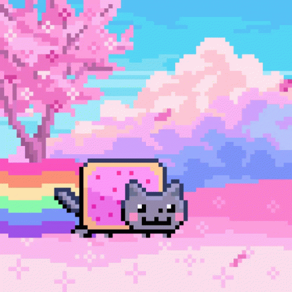
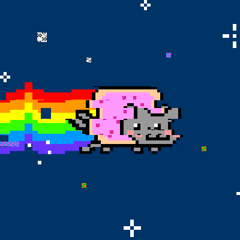
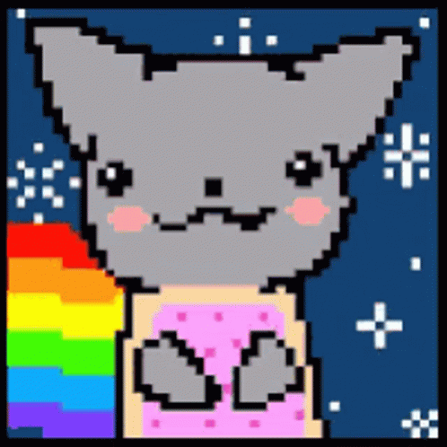

O Nyan Cat é um vídeo que foi postado no YouTube em abril de 2011 e rapidamente se tornou um meme da Internet. O vídeo combinou a canção pop japonesa “Nyanyan!” com um desenho animado de um gato cinza feito em pixel art voando no espaço em loop. O vídeo é classificado entre os cinco mais vistos do YouTube de 2011.
A animação original foi feita por Chris Torres (PRguitarman) em 2 de abril de 2011. Ele então a enviou para o site LOL-Comics, pretendendo que ela fosse "engraçada". O usuário do YouTube "saraj00n" combinou a animação com a versão da música "Nyanyanyanyanyanyanya!" enviada pelo usuário Momo Momo "もももも" do site Nico Nico Douga, e isso foi enviado para o YouTube no dia 5 de abril de 2011.
O vídeo se tornou tão popular que em 16 de junho de 2011, em vez da barra do tempo normal, o vídeo original no YouTube mostrava uma miniatura do Nyan Cat. Um print screen foi enviado ao Reddit no mesmo dia. No dia 27 de junho de 2011, o vídeo foi removido depois de uma reclamação de copyright supostamente vinda de Prguitarman, que é detentor dos direitos autorais do .gif. Após, descobriu-se que ele não tinha sido o autor da reclamação, e o vídeo foi reinstaurado. Vários jogos foram criados para dispositivos como o iPhone e os dispositivos com Android. Diversos jogos criados por fãs surgiram, Um dos primeiros foi Nyan Cat: Reloaded (formerly Nyan Cat Game) de MeisterMariues, criado em 20 de abril de 2011. Após surgiram outros jogos, como Lost in Space por mylostgames dentre outros.
Criptoativo: O Nyan Cat também se tornou um criptoativo. Ele foi transformado em um token não fungível (NFT) e vendido por meio milhão de dólares.
Na Música: Há relatos de que a banda Slipknot usou o ritmo da música do Nyan Cat em sua música "Psicosocial".
Referência em Jogos: O Nyan Cat foi referenciado no jogo para dispositivos móveis "Buffalo Bison Revenge".
Origem do Nome: “Nyanyan” é a onomatopeia japonesa para o miado de um gato.
Em um Gato Real: O desenho original foi baseado no gato de Chris Torres, Marty, que infelizmente faleceu um ano depois.
|
 |  |  | |